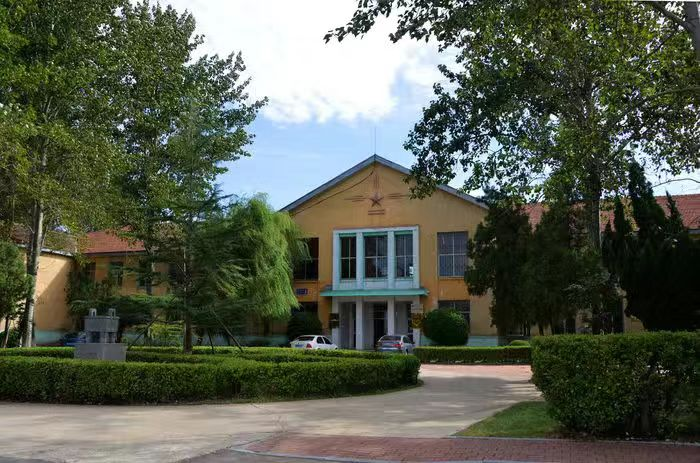
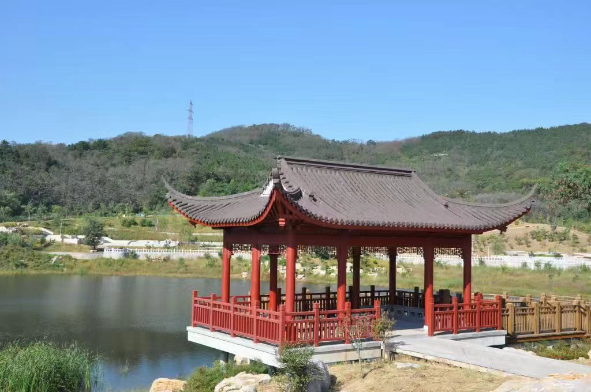
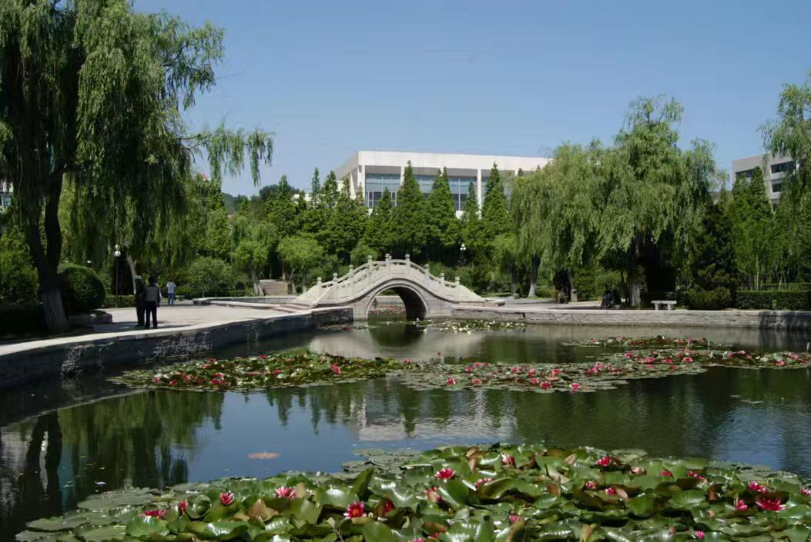

春天是校园最美的季节。微风轻轻吹过校园的每一条道路，道路两旁的树木抽出新芽，花草也在温暖的天气里慢慢绽放。粉白的花瓣偶尔随风飘落，落在路面和草坪上，给校园增添了几分柔和的气息。校园中心的湖水十分清澈，能隐约看到水下的石子和游动的小鱼，岸边的柳树垂下柔软的枝条，风一吹就轻轻晃动，偶尔触碰水面，漾开一圈圈淡淡的涟漪。湖边的小路干净整洁，每天都有不少同学在这里散步、背书或是聊天，享受着春日里舒适的环境。
阳光透过树叶的缝隙洒下来，在地面上形成一片片斑驳的光影。走在小路上，能感受到温暖又不刺眼的光线，也能听到周围传来的轻声交谈和朗朗读书声。同学们有的独自捧着书本认真阅读，有的三两成群讨论学习内容，还有的在慢慢散步放松心情。大家的状态轻松又自然，脸上带着日常的平静与朝气，和校园里真实、朴素的春日景色融为一体，让人觉得舒适又安心。这样普通又美好的日常，正是校园春天最动人的地方。



校园不仅有自然之美，更有浓厚且真实的人文气息。每天清晨，校园里就开始变得热闹起来，同学们背着书包走向教学楼，开始一天的学习生活。教学楼里整齐明亮，教室里摆放着简单的课桌椅，黑板和多媒体设备随时为课堂做好准备。上课的时候，教室里能清晰地听到老师讲课的声音和同学们回答问题的声音，大家认真听讲、记笔记，在安静有序的环境里学习知识，每一间教室都充满了踏实的学习氛围。
图书馆更是校园里最能体现人文气息的地方，里面宽敞明亮、环境安静，一排排书架上整齐地摆放着各类书籍，从专业教材到课外读物应有尽有。同学们在这里安静自习、查阅资料、整理笔记，每个人都专注于自己的事情，没有人随意喧哗。操场则是另一种景象，课余时间里有跑步、打球、锻炼的同学，充满了活力与朝气。教学楼、图书馆、操场共同构成了校园最真实、最日常的人文景观，记录着同学们学习、成长、生活的点点滴滴，也让整个校园显得充实而有意义。